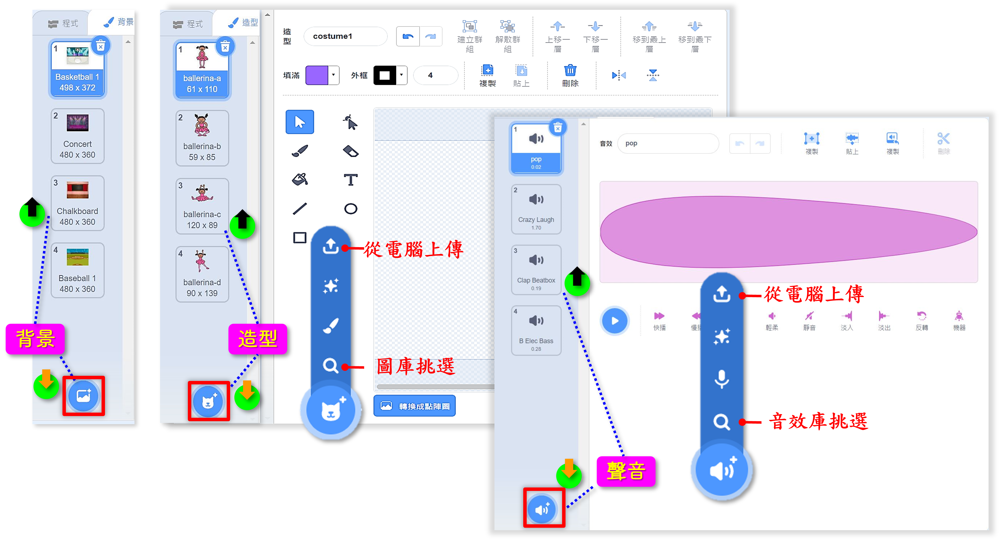
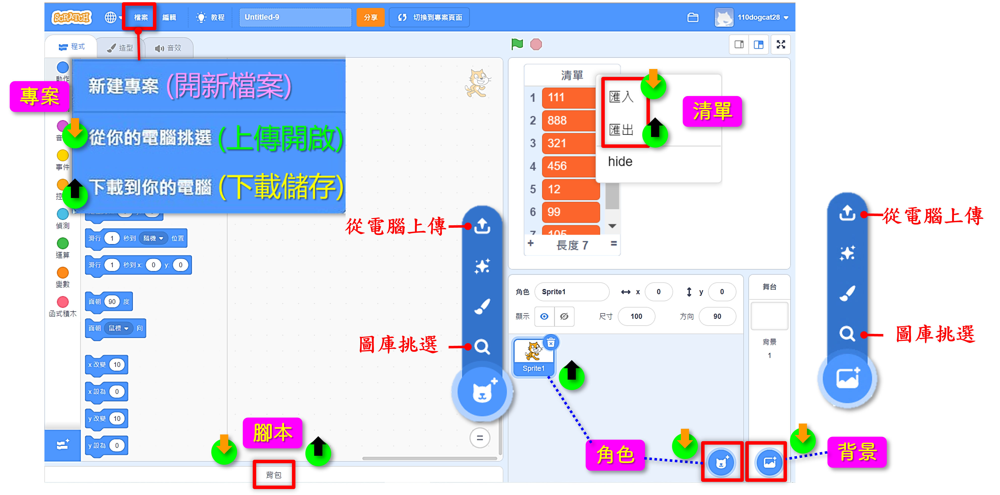
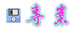
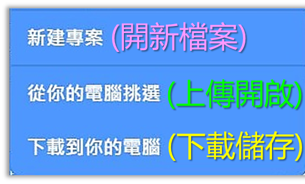
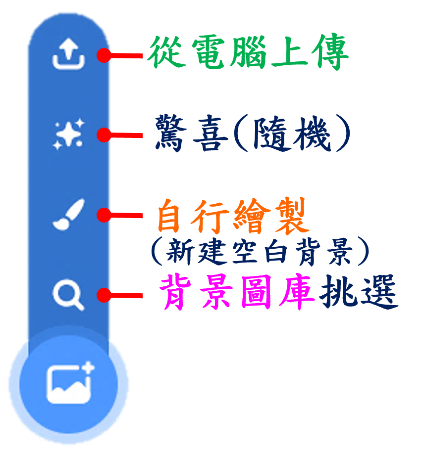
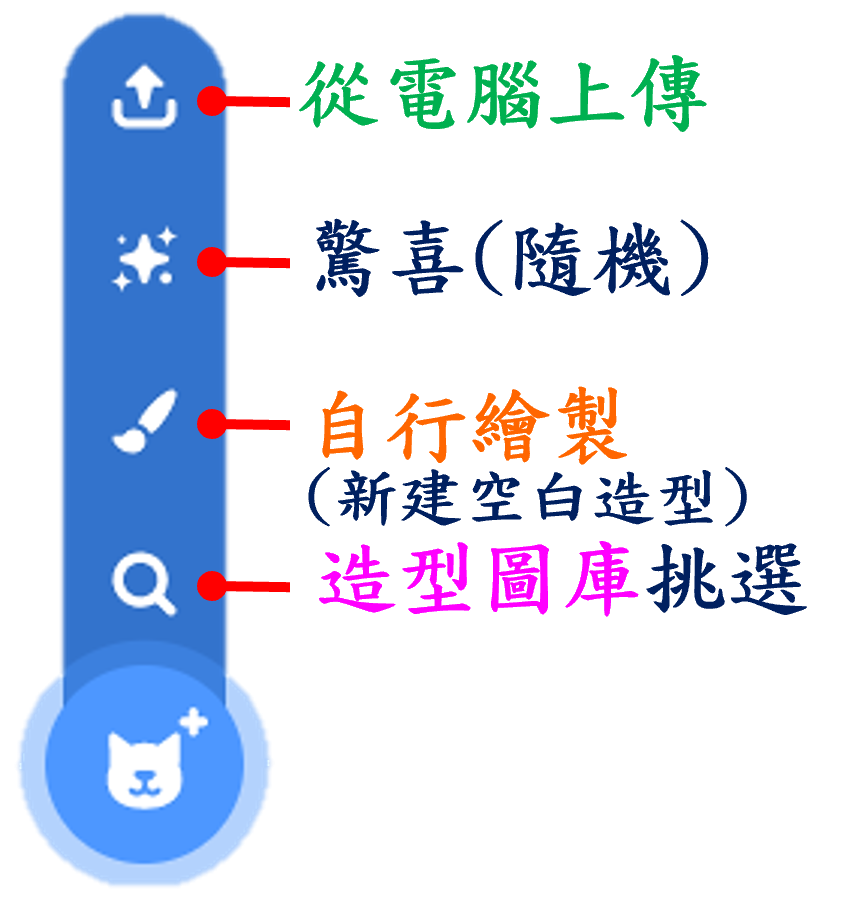
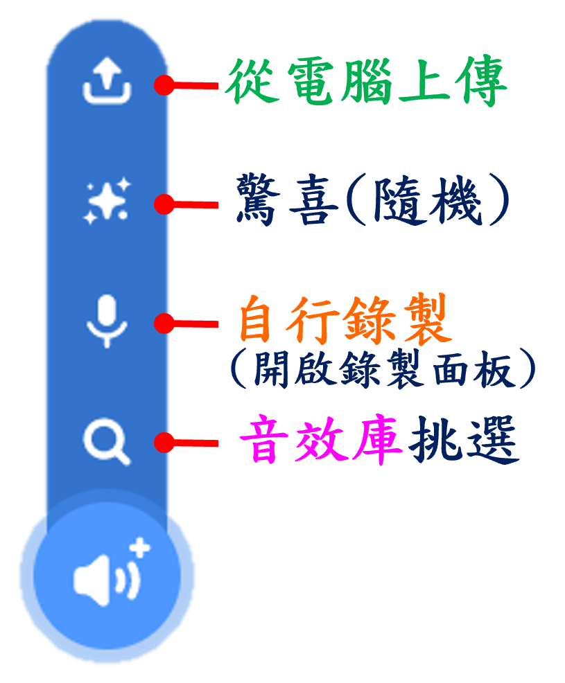
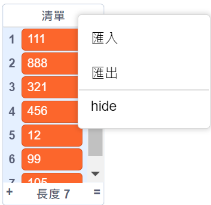

在Scratch中，「匯入」及「匯出」包含了許多部份，有專案、角色、造型、背景、聲音、清單和腳本。



- 「專案」就是我們一般稱的「檔案」。
- 「專案名稱」會顯示在編輯器上方中間，你可以直接在這裡輸入或修改，在儲存專案時就會以此為檔名。
- 在Scratch中，有關「專案」『儲存』與『開啟』的操作路徑是在編輯器左上方的功能表列的[檔案]項目。它所用的名稱與其他程式不同：開啟專案⋯⇢從你的電腦挑選 專案儲存⋯⇢下載到你的電腦
- 匯入格式：.sb3 或 .sb2 或 .sb
- 匯出格式：.sb3
- 匯入位置：角色區右下方的【選個角色】按鈕⇢[從電腦上傳]
- 匯入格式：角色專用檔：.sprite3或.sprite2或.sprite 以及支援圖片檔：.svg、.png 、.jpeg、.bmp和.gif（每張圖都會是一個角色）
- 匯出位置：在角色區中要匯出的角色略縮圖上按下滑鼠右鍵，選擇「匯出」
- 匯出格式：會包括所有造型、腳本和音效，匯集後以Scratch3.0角色專用格式.sprite3匯出
- 匯入位置：背景區下方或背景清單窗格下方的【選個背景】按鈕⇢[從電腦上傳]
- 匯入格式：支援圖片檔：.svg、.png 、.jpeg、.bmp和.gif（.svg匯入後為向量圖，其餘為點陣圖）
- 匯出位置：在背景清單窗格中要匯出的背景縮圖上按下滑鼠右鍵，選擇「匯出」
- 匯出格式：如果背景是向量圖，則匯出.svg格式圖檔；如果背景是點陣圖，則匯出.png格式圖檔
- 匯入位置：造型清單窗格下方的【選個造型】按鈕⇢[從電腦上傳]
- 匯入格式：支援圖片檔：.svg、.png 、.jpeg、.bmp和.gif（.svg匯入後為向量圖，其餘為點陣圖）
- 匯出位置：在造型清單窗格中要匯出的造型縮圖上按下滑鼠右鍵，選擇「匯出」
- 匯出格式：如果背景是向量圖，則匯出.svg格式圖檔；如果背景是點陣圖，則匯出.png格式圖檔
- 匯入位置：聲音清單窗格下方的【選個音效】按鈕⇢[從電腦上傳]
- 匯入格式：支援聲音格式：.mp3和.wav
- 匯出位置：在聲音清單窗格中要匯出的音效圖標上按下滑鼠右鍵，選擇「匯出」
- 匯出格式：一律匯出.wav格式音檔

- 匯入位置：在舞臺上該清單監視物件上按下滑鼠右鍵，選擇「匯入」
- 匯入格式：支援格式：.txt和.csv文件
- 匯出位置：在舞臺上該清單監視物件上按下滑鼠右鍵，選擇「匯出」
- 匯出格式：一律匯出.txt格式文件

- 「腳本」的匯入和匯出，是指將腳本拖曳到「背包」中存放，或從「背包」中拖曳到腳本編輯區使用。
- 此作法僅能是在已登錄的線上編輯器中使用。